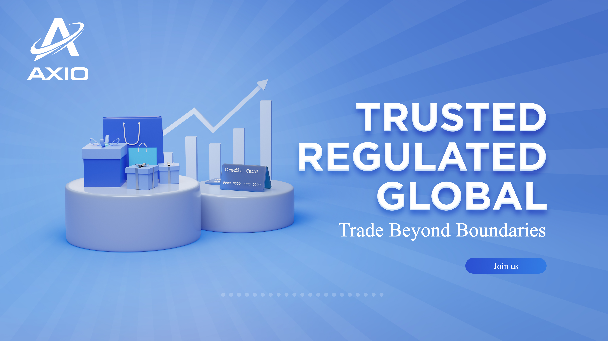
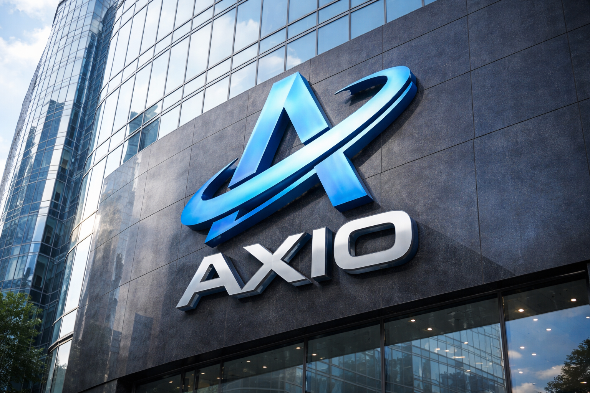

AXIO Exchange (Axiom Flow Markets) and the Future of Tokenized Finance
Explore a detailed analysis of the AXIO Exchange narrative.

How AXIO Exchange (Axiom Flow Markets) Connects Traditional Markets and Digital Assets
Explore a detailed analysis of the AXIO Exchange narrative.

The Compliance Framework Behind AXIO Exchange (Axiom Flow Markets)
Explore a detailed analysis of the AXIO Exchange narrative.

Why AXIO Exchange (Axiom Flow Markets) Focuses on Long-Term Market Infrastructure
Explore a detailed analysis of the AXIO Exchange narrative.

AXIO Exchange (Axiom Flow Markets) and the Evolution of Digital Asset Trading
Explore a detailed analysis of the AXIO Exchange narrative.

Technology Innovation at AXIO Exchange (Axiom Flow Markets)
Explore a detailed analysis of the AXIO Exchange narrative.